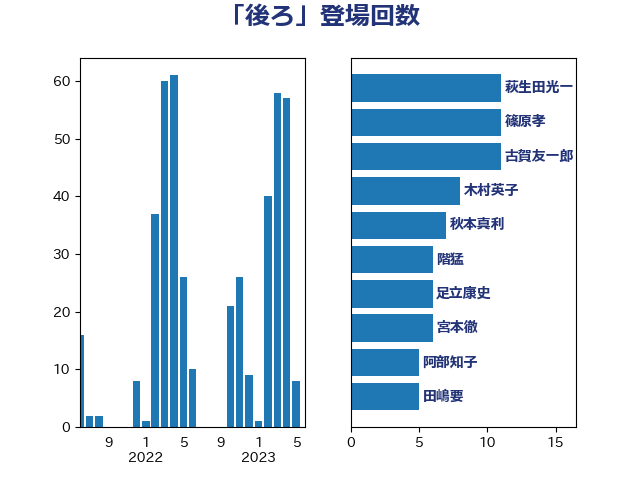

単語「後ろ」

| 萩生田光一 | 自由民主党 | 11 回 |
| 篠原孝 | 立憲民主党 | 11 回 |
| 古賀友一郎 | 自由民主党 | 11 回 |
| 木村英子 | れいわ新選組 | 8 回 |
| 秋本真利 | 自由民主党 | 7 回 |
| 階猛 | 立憲民主党 | 6 回 |
| 足立康史 | 日本維新の会 | 6 回 |
| 宮本徹 | 日本共産党 | 6 回 |
| 阿部知子 | 立憲民主党 | 5 回 |
| 田嶋要 | 立憲民主党 | 5 回 |
| 末松信介 | 自由民主党 | 5 回 |
| 塩村あやか | 立憲民主党 | 5 回 |
| 和田有一朗 | 日本維新の会 | 5 回 |
| 吉田統彦 | 立憲民主党 | 5 回 |
| 仁比聡平 | 日本共産党 | 5 回 |
| 鎌田さゆり | 立憲民主党 | 4 回 |
| 野村哲郎 | 自由民主党 | 4 回 |
| 緒方林太郎 | 無所属 | 4 回 |
| 米山隆一 | 立憲民主党 | 4 回 |
| 泉健太 | 立憲民主党 | 4 回 |
| 堤かなめ | 立憲民主党 | 4 回 |
| 伊藤孝恵 | 国民民主党 | 4 回 |
| 青柳仁士 | 日本維新の会 | 3 回 |
| 阿部弘樹 | 日本維新の会 | 3 回 |
| 長妻昭 | 立憲民主党 | 3 回 |
| 稲富修二 | 立憲民主党 | 3 回 |
| 池下卓 | 日本維新の会 | 3 回 |
| 森屋隆 | 立憲民主党 | 3 回 |
| 梅村聡 | 日本維新の会 | 3 回 |
| 本庄知史 | 立憲民主党 | 3 回 |
| 川合孝典 | 国民民主党 | 3 回 |
| 岸田文雄 | 自由民主党 | 3 回 |
| 山岸一生 | 立憲民主党 | 3 回 |
| 小池晃 | 日本共産党 | 3 回 |
| 大島九州男 | れいわ新選組 | 3 回 |
| 堀場幸子 | 日本維新の会 | 3 回 |
| 吉川元 | 立憲民主党 | 3 回 |
| 加藤勝信 | 自由民主党 | 3 回 |
| 高良鉄美 | 無所属 | 2 回 |
| 高橋英明 | 日本維新の会 | 2 回 |
| 高橋千鶴子 | 日本共産党 | 2 回 |
| 高木かおり | 日本維新の会 | 2 回 |
| 青山繁晴 | 自由民主党 | 2 回 |
| 鈴木義弘 | 国民民主党 | 2 回 |
| 鈴木敦 | 国民民主党 | 2 回 |
| 鈴木俊一 | 自由民主党 | 2 回 |
| 野田佳彦 | 立憲民主党 | 2 回 |
| 赤木正幸 | 日本維新の会 | 2 回 |
| 谷公一 | 自由民主党 | 2 回 |
| 西村康稔 | 自由民主党 | 2 回 |
| 藤岡隆雄 | 立憲民主党 | 2 回 |
| 荒井優 | 立憲民主党 | 2 回 |
| 穀田恵二 | 日本共産党 | 2 回 |
| 福島伸享 | 無所属 | 2 回 |
| 礒崎哲史 | 国民民主党 | 2 回 |
| 石川昭政 | 自由民主党 | 2 回 |
| 石川大我 | 立憲民主党 | 2 回 |
| 田村智子 | 日本共産党 | 2 回 |
| 玄葉光一郎 | 立憲民主党 | 2 回 |
| 渡辺周 | 立憲民主党 | 2 回 |
| 河野太郎 | 自由民主党 | 2 回 |
| 江田憲司 | 立憲民主党 | 2 回 |
| 比嘉奈津美 | 自由民主党 | 2 回 |
| 櫻井周 | 立憲民主党 | 2 回 |
| 森山浩行 | 立憲民主党 | 2 回 |
| 柚木道義 | 立憲民主党 | 2 回 |
| 松本尚 | 自由民主党 | 2 回 |
| 杉本和巳 | 日本維新の会 | 2 回 |
| 岬麻紀 | 日本維新の会 | 2 回 |
| 山田美樹 | 自由民主党 | 2 回 |
| 山本香苗 | 公明党 | 2 回 |
| 山本太郎 | れいわ新選組 | 2 回 |
| 山本剛正 | 日本維新の会 | 2 回 |
| 山崎誠 | 立憲民主党 | 2 回 |
| 小西洋之 | 立憲民主党 | 2 回 |
| 小林鷹之 | 自由民主党 | 2 回 |
| 室井邦彦 | 日本維新の会 | 2 回 |
| 大塚耕平 | 国民民主党 | 2 回 |
| 塩川鉄也 | 日本共産党 | 2 回 |
| 嘉田由紀子 | 無所属 | 2 回 |
| 吉良州司 | 無所属 | 2 回 |
| 前原誠司 | 国民民主党 | 2 回 |
| 住吉寛紀 | 日本維新の会 | 2 回 |
| 伊波洋一 | 無所属 | 2 回 |
| 井坂信彦 | 立憲民主党 | 2 回 |
| 井上哲士 | 日本共産党 | 2 回 |
| 下野六太 | 公明党 | 2 回 |
| 鬼木誠 | 立憲民主党 | 1 回 |
| 高橋光男 | 公明党 | 1 回 |
| 馬淵澄夫 | 立憲民主党 | 1 回 |
| 音喜多駿 | 日本維新の会 | 1 回 |
| 青山大人 | 立憲民主党 | 1 回 |
| 阿達雅志 | 自由民主党 | 1 回 |
| 長谷川岳 | 自由民主党 | 1 回 |
| 金子恵美 | 立憲民主党 | 1 回 |
| 金子俊平 | 自由民主党 | 1 回 |
| 道下大樹 | 立憲民主党 | 1 回 |
| 近藤昭一 | 立憲民主党 | 1 回 |
| 近藤和也 | 立憲民主党 | 1 回 |
| 越智隆雄 | 自由民主党 | 1 回 |
| 西田昌司 | 自由民主党 | 1 回 |
| 西村智奈美 | 立憲民主党 | 1 回 |
| 藤木眞也 | 自由民主党 | 1 回 |
| 蓮舫 | 立憲民主党 | 1 回 |
| 菅家一郎 | 自由民主党 | 1 回 |
| 舟山康江 | 国民民主党 | 1 回 |
| 紙智子 | 日本共産党 | 1 回 |
| 篠原豪 | 立憲民主党 | 1 回 |
| 竹谷とし子 | 公明党 | 1 回 |
| 空本誠喜 | 日本維新の会 | 1 回 |
| 福山哲郎 | 立憲民主党 | 1 回 |
| 石川香織 | 立憲民主党 | 1 回 |
| 石原正敬 | 自由民主党 | 1 回 |
| 石井章 | 日本維新の会 | 1 回 |
| 盛山正仁 | 自由民主党 | 1 回 |
| 田村憲久 | 自由民主党 | 1 回 |
| 田島麻衣子 | 立憲民主党 | 1 回 |
| 田中健 | 国民民主党 | 1 回 |
| 玉木雄一郎 | 国民民主党 | 1 回 |
| 牧義夫 | 立憲民主党 | 1 回 |
| 熊田裕通 | 自由民主党 | 1 回 |
| 浜田聡 | NHK党 | 1 回 |
| 浜地雅一 | 公明党 | 1 回 |
| 浜口誠 | 国民民主党 | 1 回 |
| 河西宏一 | 公明党 | 1 回 |
| 水岡俊一 | 立憲民主党 | 1 回 |
| 櫻井充 | 自由民主党 | 1 回 |
| 横沢高徳 | 立憲民主党 | 1 回 |
| 榛葉賀津也 | 国民民主党 | 1 回 |
| 梅村みずほ | 日本維新の会 | 1 回 |
| 林芳正 | 自由民主党 | 1 回 |
| 松野博一 | 自由民主党 | 1 回 |
| 松沢成文 | 日本維新の会 | 1 回 |
| 杉尾秀哉 | 立憲民主党 | 1 回 |
| 本村伸子 | 日本共産党 | 1 回 |
| 早稲田ゆき | 立憲民主党 | 1 回 |
| 日下正喜 | 公明党 | 1 回 |
| 斉藤鉄夫 | 公明党 | 1 回 |
| 徳永久志 | 立憲民主党 | 1 回 |
| 後藤祐一 | 立憲民主党 | 1 回 |
| 平林晃 | 公明党 | 1 回 |
| 平木大作 | 公明党 | 1 回 |
| 川崎ひでと | 自由民主党 | 1 回 |
| 島村大 | 自由民主党 | 1 回 |
| 岡本三成 | 公明党 | 1 回 |
| 岡本あき子 | 立憲民主党 | 1 回 |
| 山添拓 | 日本共産党 | 1 回 |
| 山崎正恭 | 公明党 | 1 回 |
| 山岡達丸 | 立憲民主党 | 1 回 |
| 小野泰輔 | 日本維新の会 | 1 回 |
| 小野寺五典 | 自由民主党 | 1 回 |
| 小田原潔 | 自由民主党 | 1 回 |
| 小熊慎司 | 立憲民主党 | 1 回 |
| 小沼巧 | 立憲民主党 | 1 回 |
| 小沢雅仁 | 立憲民主党 | 1 回 |
| 寺田学 | 立憲民主党 | 1 回 |
| 宮崎政久 | 自由民主党 | 1 回 |
| 奥野総一郎 | 立憲民主党 | 1 回 |
| 奥下剛光 | 日本維新の会 | 1 回 |
| 太田房江 | 自由民主党 | 1 回 |
| 天畠大輔 | れいわ新選組 | 1 回 |
| 大西健介 | 立憲民主党 | 1 回 |
| 堀井巌 | 自由民主党 | 1 回 |
| 吉田豊史 | 無所属 | 1 回 |
| 吉田とも代 | 日本維新の会 | 1 回 |
| 吉川沙織 | 立憲民主党 | 1 回 |
| 原口一博 | 立憲民主党 | 1 回 |
| 佐藤正久 | 自由民主党 | 1 回 |
| 佐藤啓 | 自由民主党 | 1 回 |
| 佐々木さやか | 公明党 | 1 回 |
| 伊藤渉 | 公明党 | 1 回 |
| 伊藤孝江 | 公明党 | 1 回 |
| 伊藤俊輔 | 立憲民主党 | 1 回 |
| 仁木博文 | 無所属 | 1 回 |
| 串田誠一 | 日本維新の会 | 1 回 |
| 中川正春 | 立憲民主党 | 1 回 |
| 中山展宏 | 自由民主党 | 1 回 |
| 中司宏 | 日本維新の会 | 1 回 |
| 三木圭恵 | 日本維新の会 | 1 回 |
| ながえ孝子 | 無所属 | 1 回 |